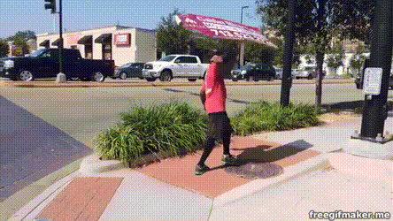
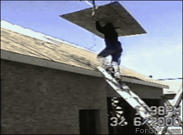

Job Experience
I don't have a lot of previous job expreience, but the experience I do have is more hands on and not really technology so here is the list of jobs Ive done.
Sign Holding
My current job is as a sign holder for various places,
but currently my boss has us holding signs for a going out of buisness Yonkers.
I work 5 hours on Saturday and Sundays, and sometimes Fridays.
By far out of all the jobs Ive work this has been the easiest, All I have to do
hold a sign and eat lunch that my boss gives me(but it comes out of my pay).
Roofing
A while back when I worked with my dad for a main job, I did a little bit of roofing out in Peoria. It was the hardest job i've ever had to do. I watched my oldest brother fall off the roof onto landscaping rocks and bricks, and had to pick up the ground and clean the gutters. That might not sound that hard, but imagine having to carry(more like drag) a 120 lbs of shingles on a tarp all the way from the home to the dumpster, unload it and bring it back 10x over.